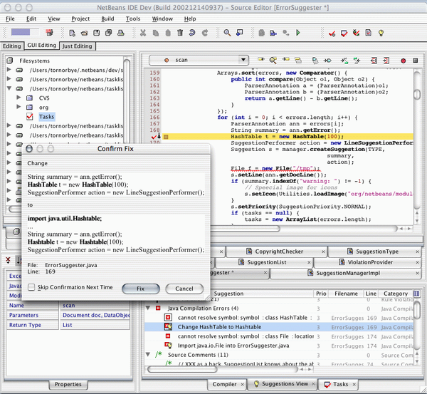
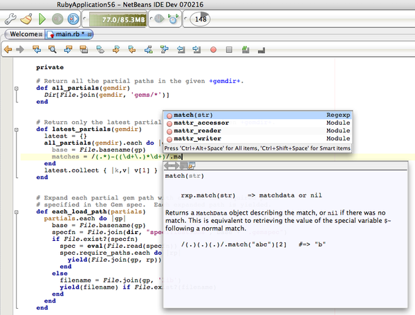
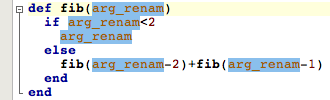
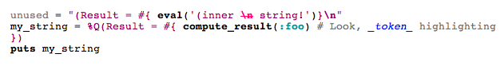

30 March 2007
|
Tor Norbye |
Tor's Hot Links: |
Tor Norbye, big hitter at Sun Microsystems, blogger, podcast personality, and... NetBeans module writer. Here he shares his experiences, and we take a peek under the hood of his Ruby development work for NetBeans IDE.
Well, I'm Norwegian, but I work at Sun Microsystems in Silicon Valley where I have been for nearly 11 years now. I'm also a co-anchor of a weekly Java podcast called The Java Posse, where we basically talk about IDEs and unintentionally butcher name pronunciations on a weekly basis...
I have worked on tools the whole time. The first five years I was working on the native tools (C/C++/Fortran), particularly in the debuggigng area. Then I worked on Creator (Sun Java Studio Creator), the predecessor to the Visual Web Pack for NetBeans IDE. I then spent a year working on Visual Basic tooling, which didn't really work out, and for the last six to nine months I have been working on Ruby support for NetBeans IDE.
I've done NetBeans module development since the beginning (when Sun acquired NetBeans), and I think I can divide the history into three eras, like Jurassic, Cretaceous and Tertiary:
I started out writing NetBeans support for C and C++; I just took a peek and some of that code is still in the NetBeans C/C++ Development Pack. In fact, this poetic comment is still in the C++ syntax lexer:
// But this might require some convoluted logic since the // compiler PARTIALLY allows other code sets. // Nay, I say, isJ* is okay!
I also in my spare time wrote a todo list module and started the tasklist.netbeans.org project. Here's a screenshot of the suggestions module I wrote—and for kicks, take a look at the NetBeans look and feel around it :-)

I then worked on Creator, which was built on top of a customized version of NetBeans, where I wrote the visual web page designer and page navigator.
Last year I was working on Project Semplice, building tooling around the Visual Basic compiler somebody else was writing, and this year I'm working on Ruby.
When we started Project Semplice, the goal was to support scripting languages better for the Java platform. In addition to looking at things like the invokedynamic bytecode, we worked on a source-to-bytecode compiler for Visual Basic, and tooling around it. I was doing the tools part, and since we wanted to do scripting languages in general, not just Visual Basic in particular, one of the key things I looked at was doing the architecture in such a way that we wouldn't have to start from scratch for each additional scripting language we supported.
Then, when Ruby came along (e.g., when Charlie Nutter and Tom Enebo, two JRuby developers were hired by Sun last fall), I immediately started looking at making my Visual Basic tooling work for Ruby as well. When the Visual Basic project slowed down (because the other two developers on the team left Sun to pursue other career opportunities), I changed focus and started targeting Ruby.
NetBeans IDE has clearly been focusing on Java, but it hasn't exclusively been a Java IDE; Sun has had a C/C++ IDE built on top of NetBeans for several years. In addition, it supports other languages like XML (and ant, BPEL, etc.), JSP, and so on. There have also been additional language plugins like the Coyote project, which I've seen is being upgraded to 6.0, at least for Groovy.
In addition, NetBeans 6.0 is taking multi-language support to the next level with the "Schliemann Project", which makes it trivial to add basic support for a wide variety of languages—and a number of languages are supported. For example, manifest files and patch files are finally given better treatment than plain text files.
So adding Ruby to the IDE is a natural progression, and I think you'll see additional languages added in the future.
Ruby programmers have traditionally been using editors rather than IDEs. Ruby is a dynamic language, so providing IDE features like Code Completion, Go To Declaration etc. is very tricky to support. For example, look at this method:
def max(a,b) # Code logic to return the largest element—a or b end
Here we've got two parameters—named a and b. But what are their types? What methods are available on them? There's no type declaration, so we just don't know. That's the root problem of doing features like code completion in a dynamic language.
That doesn't mean it's impossible. For example, let's say this is the method body:
def max(a,b) a.numerify b.numerify # more code end
If I know that there's only one class in the program and libraries which have a method named "numerify", then I can deduce that the type of a,b is that particular class.
As another example, let's say I'm tracking all call sites to this method, and I know the types of the parameters for all those sites. In that case I may also be able to narrow the types. The point is that there are a lot of heuristics and approaches to making the tools work better—and that's the approach we're taking in the Ruby support in NetBeans IDE. I'm giving a technical talk at JavaOne which gets into more detail on the various approaches.
But, because of problems such as these, the field of Ruby IDEs is pretty young. However, there's healthy competition. I'm obviously not a neutral observer, but I think NetBeans compares favorably with all the other IDEs, and I'm hard at work to ensure we stay competitive.
Code completion with documentation popups. Ruby has its own set of libraries, which I don't know well. Even in Java, I often rely on the Javadoc popups in code completion to remind me what parameters I need to pass to a method. Having code completion pop up with full documentation on the class or method and its parameters is really useful. Being able to warp from there to the actual implementation method (Ctrl-click) is also pretty handy!
Here's a screenshot:

If you want to see more pictures, go to http://wiki.netbeans.org/wiki/view/RubyEditing.
I also like the "Instant Rename" feature, which lets you quickly rename parameters and local variables, right there in-place in the editor. Here's a screenshot:

However, it's hard to "get" this until you try it!
The goal is to basically support anything you can do with Java. For now, we have deep editing support, debugging, and web application support (using Ruby On Rails).
I have a number of features on my todo list, and I'm not sure what I'll be able to get done by 6.0, but it's pretty likely that GUI building (using Matisse) for Ruby will not be there, nor will UML support or profiling support.
The features I plan to attack next are refactoring, improved Rails support (particularly editing of their JSP-equivalent: RHTML files), and improved Java<->Ruby integration such that you can access Java libraries from within your Ruby applications.
I've had a lot of fun. I've been using a lot of the new 6.0 APIs, such as the lexer apis, which are very nice and makes it trivial to support embedded languages. In the Ruby support for example, I have special syntax highlighting of literal strings, and comments, and even Ruby code within literal strings within Ruby code!
I've also been heavily borrowing from the new Java editing infrastructure, which contains a lot of improvements.
It's really fun to work on a platform that is improving so rapidly.
Doing the lexing was never the really hard part of adding editing support for a new language; there were just a large number of classes and extension points you had to implement, and if you did anything wrong, you'd just be staring at a plain text editor. The Schliemann Project makes a dramatic difference in this area, where you just have to write a configuration file, and everything else is done for you.
Having said that, the new Lexer API has made a couple of things much easier:
.t.e.s.t. Special markers *bold* +terminal+ _italic_ .e.o.f. .t.e.s.t. NOT special markers \*bold* *bold\* x*y this_is _myidentifier hel*lo*you .e.o.f.
The testing infrastructure generates this :
.t.e.s.t. Special markers COMMENT_BOLD "*bold*" COMMENT_TEXT "\n" COMMENT_HTMLTAG "+terminal+" COMMENT_TEXT "\n" COMMENT_ITALIC "_italic_", la=1 ----- EOF ----- .t.e.s.t. NOT special markers COMMENT_TEXT "\\*bold*\n" COMMENT_TEXT "*bold\\", la=1 COMMENT_TEXT "*\nx*y\n" COMMENT_TEXT "this_is\n" COMMENT_TEXT "_myidentifier\n", la=2 COMMENT_TEXT "hel*lo*you", la=1 ----- EOF -----
These are the tokens for my input. I look through them and verify that the tokens are correct. From now on, the testing infrastructure will run the lexer on the input and verify that the output matches the golden file that I have already checked.
The above unit test examples comes from my comment lexer. I'm processing comments in the Ruby code with a separate lexer. This lexer recognizes various Ruby comment conventions. For example, HTML tags are highlighted, such that you can write the following:
The _first_ thing this method does is call String#scanf, unless x < y
Here the word "first" will be highlighted and shown in italics, because words surrounded by _ are known to be italic. "String#scanf" will be highlighted, because this follows the syntactic conventions of a class#method call in Ruby. And so on.
Being able to write this as a separate lexer (which is only processing comments) is much cleaner than trying to graft this into the already extremely complicated Ruby lexer.
And the lexer infrastructure makes it trivial to create embeddings. I basically implement an "embedded" method where if I see a particular token (in my case, COMMENT), I can return another lexer language. The contents of that token will then be processed by the editor such that the individual characters are lexed by a lexer for the other language. This can happen recursively, and frequently does.
Here's Ruby code which contains a String, and inside that String I have Ruby code, and inside that Ruby code I have a String! This is 4 levels of nesting—and it works beautifully. Take a look!

As you can see, the inner string is tokenized as unquoted strings (where "\n" is highlighted as a wrong escape), and the outer string is tokenizing it as quoted strings (the final "\n" is shown in bold).
You can also see that the comment inside the string inside code is tokenized such that the "_token_" is shown in italic (and blue).
It's the infrastructure I started when working on Project Semplice. Its only client at the moment is Ruby. More importantly, it's not available for any other languages at the moment; the API is in rapid motion (I'm sure it will change more when I do more source-rewriting support, for example, for refactoring) and I don't want to be locked down in staying compatible to support other languages. And finally, producing an official API will require a lot of review and involvement from others; at the moment it's really a convenient architecture which keeps IDE logic on one side and language specific logic on the other side. Schliemann keeps pushing deeper and deeper into editing support, so in the future perhaps it won't be necessary at all.
Schliemann lets you write a grammar declaration, and everything else is done for you—in particular, lexing and parsing. In the Ruby support, the language plugin (Ruby) is completely responsible for parsing on its own. It produces its own ASTs (abstract syntax trees), and for features like instant-rename, or code completion, it walks its own ASTs to compute its results. I'm using JRuby as the lexer and parser, so the "hard part" of supporting Ruby is done by JRuby.
I also plan to use Schliemann for various other language types needed for Ruby support, such as RHTML files (I want to use Schliemann to define the "outer" language, RHTML, and then have it delegate to my Ruby support for the embedded Ruby regions), as well as YAML files.
There are some other areas that I work on which Schliemann doesn't address, such as project support. I'm not sure it's possible to do anything "automated" in this area for other languages—I think it's unlikely that you could write a descriptor file which would produce decent project support for another language. When it comes to providing logical views of the project, providing project actions (like "generate ruby documentation" etc.), you just have to write custom code for each language.
This sometimes overlaps with editing. For example, one of the key portions of the deep Ruby editing support is that it maintains an index of the user's code as well as the Ruby libraries, such that it can offer cross-file code completion etc.
No, they are trade secrets!
Seriously though... I only recently discovered the NetBeans Developers FAQ and it looks like it contains a wealth of information that I have had to dig up the hard way in the past.
Not really—it's mostly the other way around. With the Ruby module development in particular, I'm releasing weekly screenshots of features I've just added. I've gotten lots of feedback on this, which sometimes leads to improving the feature. It's really great to have an ongoing "dialogue" (thanks to the blog comments feature it's not just one-way) with the users. When I worked on Creator, the source base was not yet open source, so I couldn't write about new features until they were released, sometimes a year later. Being able to work in open source and discuss the development openly in blogs and podcasts is really a lot of fun.
Yes! The Java Posse will be appearing both at NetBeans Day as well as at our own Birds of a Feather session, which was a lot of fun last year and will hopefully be equally successful this year. I will also be doing a technical session at JavaOne, on the "State of the Art in Ruby Tooling". And if I can get some really compelling features working in the next few weeks, perhaps I can get myself into a keynote demo! I am at least going to try!
I honestly haven't looked at the schedule yet. I usually do everything last minute, but with the new Java One reservation system (where signing up in advance gives you the right to be in the room when its over crowded, which often happens for the best talks) I may have to go sign up soon!
Sure! I'd like the help get word out about podcasts. When I've mentioned our podcast to some Java programmers, they said things like "sorry, I don't have an ipod!". It's a common misconception (which Apple probably benefits from) that podcasting requires an ipod.
A podcast is simply an audio file you can listen to. However, the podcasts are wrapped in some extra metadata which makes them easier to deal with. For example, you can subscribe to a podcast, which means that as soon as new episodes are released, they are downloaded for you.
Others have asked me why they would want to listen to computer news when they can read the same information so much faster in blogs. Podcasts are not a replacement for blogs, in much the same way that radio is not a replacement for newspapers. I read blogs when I'm at my computer. But when I'm commuting to work, or washing dishes, or just cleaning the house, I like to listen to podcasts using my ipod (hence the name podcast, but any portable music player will do).
I prefer podcasts over listening to the radio, because radio programs typically have to cater their programming to general population interest topics: celebrity news and sports. With podcasts, you can have extremely specialized interest programs, and even if there is just one listener in each town, that makes a pretty large listener population worldwide.
So, if you haven't checked out podcasts yet, give it a try and see if you like our Java related podcast—the The Java Posse.